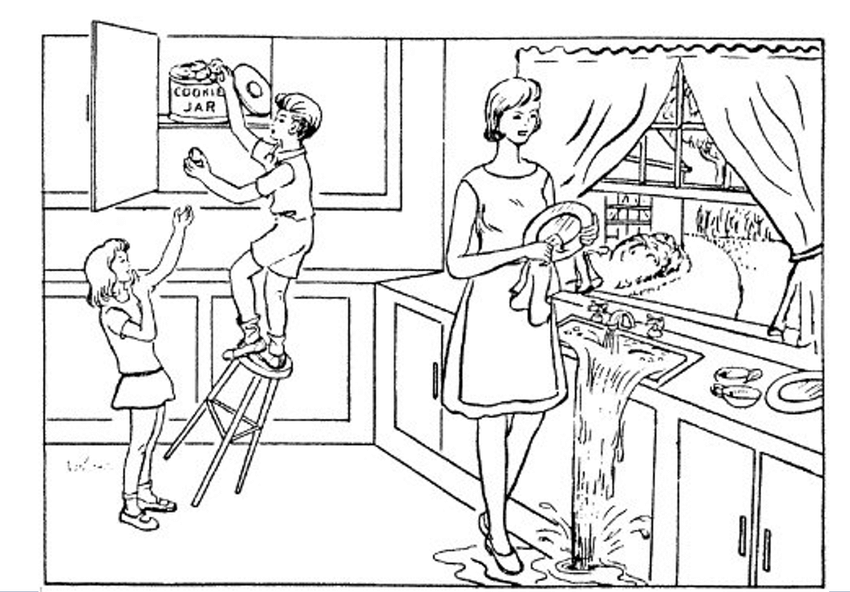
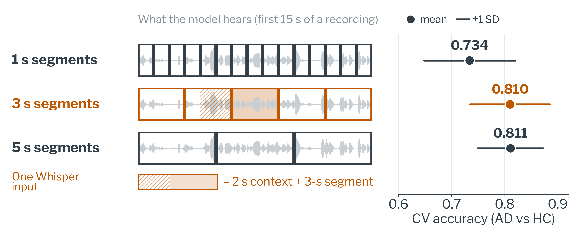
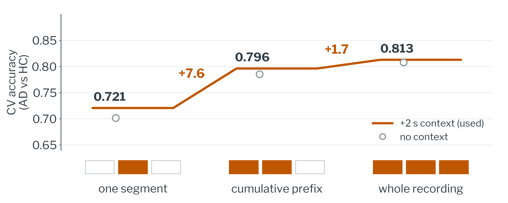
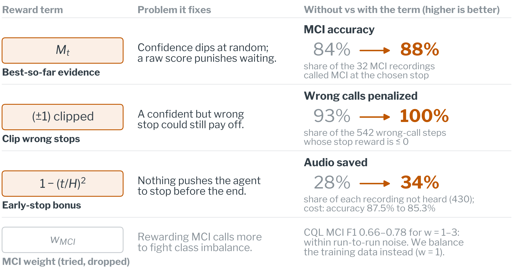
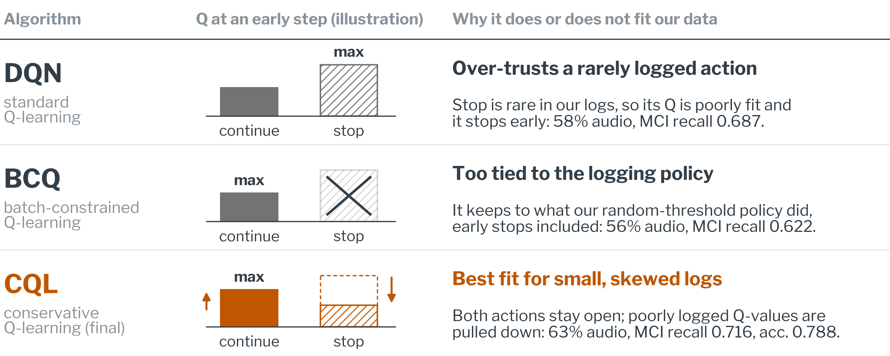

01The poster

Tap or click the poster to zoom; scroll to pan.
02The problem
Early screening for cognitive decline needs to be quick, cheap and repeatable. Standard cognitive tests are long and tiring, and speech models always listen to a fixed amount of audio, even when the evidence was clear much earlier. The challenge is sharpest for mild cognitive impairment (MCI), the earliest and hardest stage to detect.
We treat screening as a sequential decision: after every 9 seconds of speech, a policy decides whether it has heard enough to make a call, or should keep listening. The work has two parts: how to turn speech into good embeddings (the GRU is only the carrier), and how to design the reinforcement learning that decides when to stop.
Research questions
- RQ1 How should audio be cut and pooled into Whisper embeddings?
- RQ2 How should segments enter the GRU so that evidence accumulates?
- RQ3 How should the reward and RL algorithm be designed to save speech but keep MCI detection?
03Data and task

Pitt Corpus, DementiaBank. Participants describe the Cookie Theft picture aloud: a kitchen scene, about a minute of unscripted speech.

04Pipeline: GRU + Offline RL

Offline RL learns the stopping rule from recorded data only; it never interacts with patients. The final decision stays with a clinician.
05Contribution 1: speech representation
How long should a segment be? (RQ1)

Evidence has to accumulate (RQ2)

06Contribution 2: when to stop (RQ3)
Screening as optimal stopping

- State
st = [ht, pt]GRU hidden state (64) + class probabilities (3)- Action
Continue or Stopone decision every 3 segments (9 s)- Evidence
Mt = maxτ≤t (2 · maxc pτ(c) − 1)best confidence so far- Continue
r = Mt+1 − Mt − 0.02gain if evidence grows, small cost per step- Stop
r = wy · (1 − (t/H)²) · Mt · (±1)wrong stops are clipped at 0; H = steps in the recording (mean 4.6)
Designing the reward

How the offline RL algorithms differ

07Results
| 5-fold CV | MCI F1 | MCI recall | Accuracy | Audio used |
|---|---|---|---|---|
| GRU, baseline (A1) | 0.340±0.234 | 0.244±0.179 | 0.742±0.043 | 100% |
| GRU, class-balanced (A2) | 0.795±0.032 | 0.855±0.166 | 0.763±0.045 | 100% |
| + threshold rule | 0.743±0.089 | 0.798±0.152 | 0.766±0.054 | 79%±5 |
| + offline DQN | 0.726±0.114 | 0.687±0.098 | 0.771±0.052 | 58%±4 |
| + offline BCQ | 0.685±0.140 | 0.622±0.152 | 0.767±0.055 | 56%±4 |
| + offline CQL (final)final | 0.746±0.107 | 0.716±0.125 | 0.788±0.053 | 63%±3 |
Mean over 5 participant-level folds, ±1 SD below. Audio used = share of each recording heard before the decision.
Class balancing (A1 to A2) is the key fix for MCI; A3–A7 (oversampling, mixup, extra losses) did not do better. The stopping rules below the line are all built on A2.
All Stage 1 ablations (A1–A7)
| Ablation (5-fold CV, mean) | MCI F1 | MCI recall | MCI precision | MCI AUC |
|---|---|---|---|---|
| A1 Base | 0.340 | 0.244 | 0.650 | 0.974 |
| A2 Balanced | 0.795 | 0.855 | 0.783 | 0.980 |
| A3 MCI ×3 | 0.692 | 0.776 | 0.645 | 0.986 |
| A4 Mixup | 0.772 | 0.706 | 0.870 | 0.976 |
| A5 +Contr. | 0.688 | 0.565 | 0.927 | 0.980 |
| A6 +Ord. | 0.688 | 0.565 | 0.927 | 0.983 |
| A7 +Both | 0.751 | 0.637 | 0.920 | 0.976 |
Takeaways
- Representation: 3–5 s segments, accumulated (+9 points).
- Stopping: offline RL hears 63% of the audio at 0.788 accuracy.
- Design: each reward term fixes one failure; conservative CQL beats DQN and BCQ.
Clinical relevance
- Shorter, adaptive tests ease the burden on older adults.
- Decision support: flags who may need a full evaluation; the clinician decides.
- Speech is cheap to collect at scale, in primary care or remotely.
08Limitations and next steps
- Small MCI sample: 14 participants and 32 recordings in the cross-validation pool.
- Large fold-to-fold variance: MCI F1 SD 0.107 for the RL policy vs 0.032 for the full-length GRU.
- Stopping early lowers MCI recall (0.72 vs 0.86 at full length).
- The segmentation study (Contribution 1) is on AD vs HC only.
- MCI recordings are about 2× longer than HC recordings (69 s vs 36 s), so recording length may act as a cue.
- Single corpus and task. Next: external validation on independent corpora (PROCESS, ADNI4, WRAP).
09Methods in brief
- Audio: 16 kHz, peak-normalised, cut into non-overlapping 3-s segments. Whisper-medium sees each segment with 2 s of left context; only the segment’s own frames are kept.
- Features: 1024-d mean-pooled Whisper embedding + its first difference = 2048-d per step.
- GRU: 2 layers, 64 units, dropout 0.3, a 3-class head at every step, trained with class-balanced sampling (A2).
- Offline RL: d3rlpy; Discrete CQL (α = 0.1, final), Discrete BCQ and DQN, each trained for 5,000 steps (learning rate 10−4, γ = 0.99) on class-balanced episodes. Episodes come from a randomized-threshold behaviour policy with 15% random actions.
- Evaluation: participant-level stratified 5-fold CV. Each fold’s RL policy uses that fold’s own frozen GRU, so no held-out participant is seen during training.
- Standard deviations are sample SDs (ddof = 1) across the 5 folds.
10References
- Radford A, et al. Robust speech recognition via large-scale weak supervision (Whisper). ICML 2023.
- Becker JT, et al. The natural history of Alzheimer’s disease: description of study cohort and accuracy of diagnosis. Arch Neurol 1994.
- Fujimoto S, Conti E, Ghavamzadeh M, Pineau J. Benchmarking batch deep reinforcement learning algorithms. arXiv 2019.
- Kumar A, Zhou A, Tucker G, Levine S. Conservative Q-learning for offline reinforcement learning. NeurIPS 2020.
- Seno T, Imai M. d3rlpy: an offline deep reinforcement learning library. JMLR 2022.
- Mnih V, et al. Human-level control through deep reinforcement learning (DQN). Nature 2015.
11Contact
xuan.wang@austin.utexas.edu
Acknowledgments: computing resources from the Texas Advanced Computing Center (TACC), The University of Texas at Austin. Speech data from DementiaBank / TalkBank.